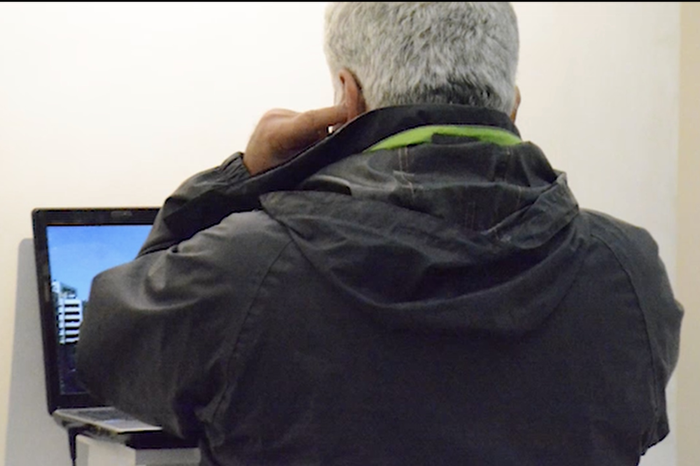

Audiovisual Creation Lab
Urban Temporalities
Concept
Urban Temporalities explores time as lived experience in Brussels.
Research Dimensions
- Time as experience
- Time as structure
- Time as power
Workshop Phases
01
Attention
Developing presence and observational practice
02
Capture
Recording image and sound in the urban field
03
Transformation
Processing and reworking raw material
04
Composition
Assembling temporal layers into form
05
Resolution
Finalizing the collective audiovisual work
Timeline
- May – June 2026 — Workshop phase
- July – August 2026 — Production & editing
- September 2026 — Finalization & screening
Output
A collective 20–40 minute audiovisual film.
Watch